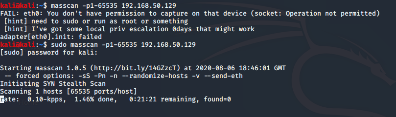

was made to scan internet really fast -its a port scannner

see sS was Stealth Scan
Pn was ki make all ports active
the rest options are similar to nmap
running this alongwiht nmap as below

did above process faster

sometimes kali ka nmap is faster sometimes masscan is faster
and jo nmap scan se ports mile un par ab -A maar

this process of selecting ports and pressing -A on them is much faster
this is called staged scanning or phased scanning
author said ki he would do -A on all and till thatv time would do his work bt in time bound competitions do nmap on particular ports hi sirf
below are nmap results: